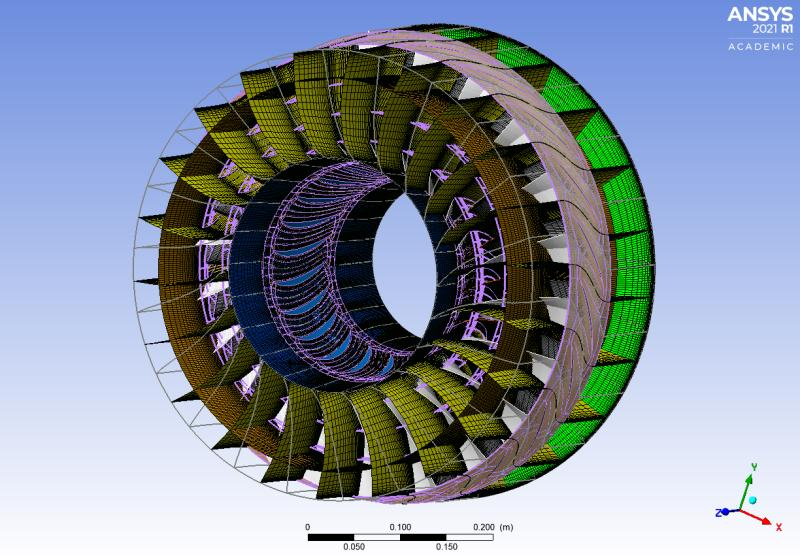
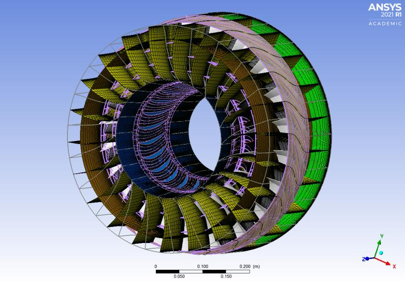
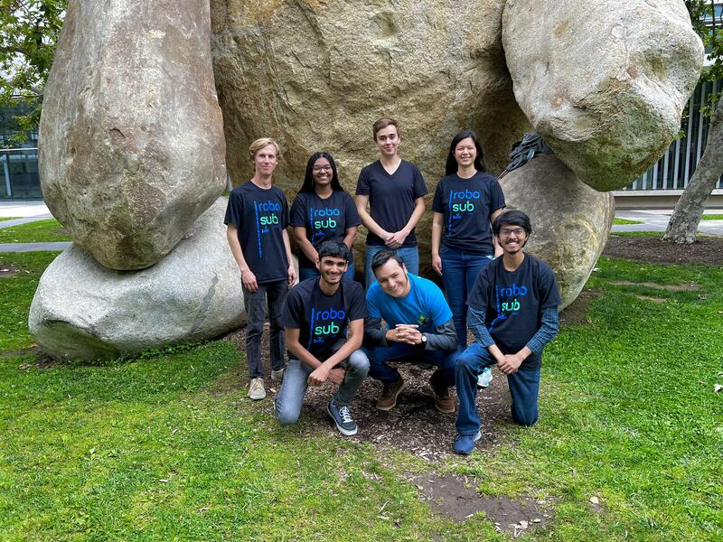
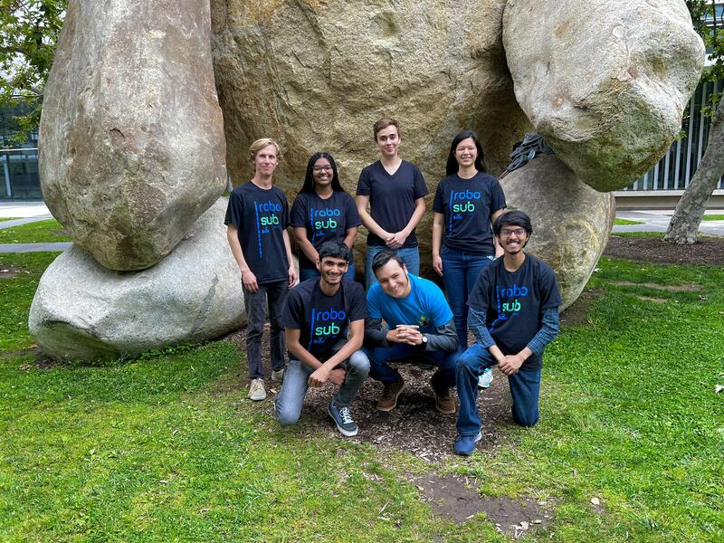

Work Experience
Center for Energy Research
Software Engineering Intern
- Created a user-friendly smart-plug schedule optimization application which reduced building energy consumption by 20%.
- Utilized Numpy, Pandas, Matplotlib, and Seaborn to create insightful data visualizations that informed strategic decisions.
- Led the formulation of energy-saving criteria for 8+ campus laboratories, driving UCSD’s sustainability initiatives forward.
- Presented data-driven energy savings in meetings with 6 stakeholders across 4 campus buildings, securing approval.
Computational Modelling & Flow Physics Lab
Undergraduate Researcher
- Presenting summer research in the Summer Research Conference.
- Skills: Software Development · Problem Solving · Ansys Design Modeller · Ansys TurboGrid · Ansys Customization Toolkit (ACT) · Computational Fluid Dynamics (CFD)
 

Kastner Research Group
Embedded Systems Lead
Part-time, Nov 2021 – Jun 2023
- Developed an autonomous underwater vehicle with the Triton Robosub team under Professor Ryan Kastner’s mentorship.
- Specialized in optimizing hydrophone array systems for remote underwater signal perception and precise navigation.
- Developed signal processing algorithms, including peak detection, which improved audio analysis accuracy by 15%.
- Integrated the Multiple Signal Classification algorithm into the sub’s controls, enhancing real-time signal processing.
- Qualified for semi-finals of the Robosub 2023 Competition held in San Diego out of 35 teams representing 5 countries.
 

COSMOS - ‘Hacking for Oceans’ Project
Teaching Assistant
Part-time, Jun 2022 – Jul 2022
- Led a 6-week long lab section of 25+ students in developing autonomous boats with sensors to collect oceanographic data.
- Instructed students in configuring long-range microcontrollers to enable remote networking and telemetry over 4 miles.
- Directed students in programming GPS navigation and real-time sensor data visualization to actively monitor water quality.